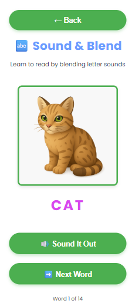
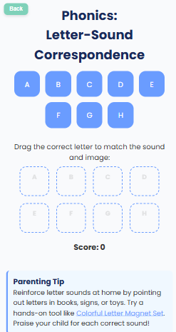

Early Reading Just Got Easier: 2 New Phonics Games
We’re thrilled to introduce two brand-new phonics games on Teachings.AI! These activities are specially designed for preschoolers and early readers to practice the building blocks of reading — in a playful, interactive way.
📸 What’s New?


Explore: Sound Blending & Letter-Sound Matching
🗣️ Phonics – Sound & Blend
Children learn to read by blending letter sounds together. Example: /c/ ... /a/ ... /t/ → cat! This teaches how letters combine into words — the very foundation of reading.
How to Help Your Child:
Say each sound together and encourage your child to repeat: “/c/ … /a/ … /t/ … cat!”
Best for: Pre-K to Grade 1, early reading practice
Play Sound & Blend →🔡 Phonics: Letter-Sound Correspondence
A fun drag-and-drop game where kids match the correct letter to the sound and image. This activity reinforces the link between written letters and spoken sounds.
Parenting Tip:
Reinforce letter sounds at home by pointing out letters in books, signs, or toys. Use colorful letter magnets for hands-on practice. And don’t forget to praise your child for every correct sound!
Best for: Kindergarten & early readers building phonics skills
Play Letter-Sound Game →Why Phonics Games Work
- 🎧 Listen & Learn – Audio support helps kids connect sounds to letters.
- ✋ Interactive Play – Drag-and-drop makes learning active and fun.
- 🌟 Confidence Boost – Small wins build motivation to keep reading.
- 📱 Instant Access – No login, free to play, works on any device.
At Teachings.AI, our goal is to make learning joyful. With these new phonics games, your child can start their reading journey with confidence — whether at home or in the classroom.